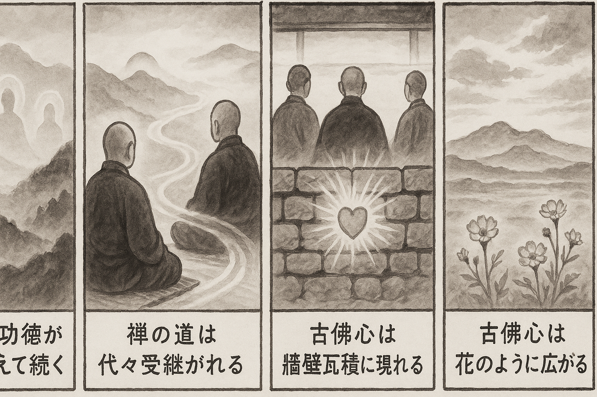

七十五巻 巻一覧
正法眼藏第9 古佛心
本ページの導入・語彙・深掘り・クイズは tools/regen_volume_intro_from_corpus.py が OpenAI API で生成したものです（入力は当巻冒頭原文の抜粋）。内容はモデル出力のため、重要箇所は必ず原文・教本と照合してください。
出典: https://shomonji.or.jp/zazen/doc/genzou.html
（ローカル生成の全文: 全文ページ）
この巻の位置（導入）
祖宗の嗣法するところ、七佛より曹谿にいたるまで四十祖なり。曹谿より七佛にいたるまで四十佛なり。七佛ともに向上向下の功徳あるがゆゑに、曹谿にいたり七佛にいたる。
古佛の道を參學するは、古佛の道を證するなり。代代の古佛なり。いはゆる古佛は、新古の古に一齊なりといへども、さらに古今を超出せり、古今に正直なり。
語彙の足場
- 古佛：古代の仏陀を指し、過去の教えや智慧を持つ存在として尊重される。
- 曹谿：禅宗の重要な宗派の一つで、古佛の教えを受け継ぐ流派を示す。
- 功徳：善行や修行によって得られる霊的な利益や恩恵を指す。
- 心：仏教においては、意識や精神の本質を表し、悟りや真理の探求において重要な要素。
- 問處：問いかけや問題の所在を示し、探求の出発点となる概念。
本文（冒頭・抜粋）
出典はリポジトリ内 doc/正法眼蔵.txt です。原文の参照元: https://shomonji.or.jp/zazen/doc/genzou.html
祖宗の嗣法するところ、七佛より曹谿にいたるまで四十祖なり。曹谿より七佛にいたるまで四十佛なり。七佛ともに向上向下の功徳あるがゆゑに、曹谿にいたり七佛にいたる。曹谿に向上向下の功徳あるがゆゑに、七佛より正傳し、曹谿より正傳し、後佛に正傳す。ただ前後のみにあらず、釋迦牟尼佛のとき、十方諸佛あり。靑原のとき南嶽あり、南嶽のとき靑原あり。乃至石頭のとき江西あり。あひ罣礙せざるは不礙にあらざるべし。かくのごとくの功徳あること、參究すべきなり。
向來の四十位の佛祖、ともにこれ古佛なりといへども、心あり身あり、光明あり國土あり、過去久矣あり、未曾過去あり。たとひ未曾過去なりとも、たとひ過去久矣なりとも、おなじくこれ古佛の功徳なるべし。古佛の道を參學するは、古佛の道を證するなり。代代の古佛なり。いはゆる古佛は、新古の古に一齊なりといへども、さらに古今を超出せり、古今に正直なり。
先師曰く、與宏智古佛相見（宏智古佛と相見す）。
はかりしりぬ、天童の屋裏に古佛あり、古佛の屋裏に天童あることを。
圜悟禪師曰く、稽首曹谿眞古佛（稽首す、曹谿眞の古佛）。
しるべし、釋迦牟尼佛より第三十三世はこれ古佛なりと稽首すべきなり。圜悟禪師に古佛の莊嚴光明あるゆゑに、古佛と相見しきたるに、恁麼の禮拜あり。しかあればすなはち、曹谿の頭正尾正を草料して、古佛はかくのごとくの巴鼻なることをしるべきなり。この巴鼻あるは、この古佛なり。
疎山曰く、大庾嶺頭有古佛、放光射到此間（大庾嶺頭に古佛有り、放光此間に射到す）。
しるべし、疎山すでに古佛と相見すといふことを。ほかに參尋すべからず。古佛の有處は、大庾嶺頭なり。古佛にあらざる自己は古佛の出處をしるべからず。古佛の在處をしるは古佛なるべし。
雪峰いはく、趙州古佛。
しるべし、趙州たとひ古佛なりとも、雪峰もし古佛の力量を分奉せられざらんは、古佛に奉覲する骨法を了達しがたからん。いまの行履は、古佛の加被によりて、古佛に參學するには、不答話の功夫あり。いはゆる雪峰老漢、大丈夫なり。古佛の家風および古佛の威儀は、古佛にあらざるには相似ならず、一等ならざるなり。しかあれば、趙州の初中後善を參學して、古佛の壽量を參學すべし。
西京光宅寺大證國師は、曹谿の法嗣なり。人帝天帝、おなじく恭敬尊重するところなり。まことに神丹國に見聞まれなるところなり。四代の帝師なるのみにあらず、皇帝てづからみづから車をひきて參内せしむ。いはんやまた帝釋宮の請をえて、はるかに上天す。諸天衆のなかにして、帝釋のために説法す。
國師因僧問、如何是古佛心（如何にあらんか是れ古佛心）。
師云、牆壁瓦礫。
いはゆる問處は、這頭得恁麼といひ、那頭得恁麼といふなり。この道得を擧して問處とせるなり。この問處、ひろく古今の道得となれり。
このゆゑに、花開の萬木百草、これ古佛の道得なり、古佛の問處なり。世界起の九山八海、これ古佛の日面月面なり、古佛の皮肉骨髓なり。さらに又古心の行佛なるあるべし、古心の證佛なるあるべし、古心の作佛なるあるべし。佛古の爲心なるあるべし。古心といふは、心古なるがゆゑなり。心佛はかならず古なるべきがゆゑに、古心は椅子竹木なり。盡大地覓一箇會佛法人不可得（盡大地、一箇の佛法を會する人を覓むるに不可得）なり、和尚喚這箇作甚麼（和尚這箇を喚んで甚麼とか作ん）なり。いまの時節因緣および塵刹虛空、ともに古心にあらずといふことなし。古心を保任する、古佛を保任する、一面目にして兩頭保任なり、兩頭畫圖なり。
師いはく、牆壁瓦礫。
いはゆる宗旨は、牆壁瓦礫にむかひて道取する一進あり、牆壁瓦礫なり。道出する一途あり、牆壁瓦礫の牆壁瓦礫の許裏に道著する一退あり。これらの道取の現成するところの圓成十成に、千仭萬仭の壁立せり、迊地迊天の牆立あり、一片半片の瓦蓋あり、乃大乃小の礫尖あり。かくのごとくあるは、ただ心のみにあらず、すなはちこれ身なり、乃至依正なるべし。
しかあれば、作麼生是牆壁瓦礫と問取すべし、道取すべし。答話せんには、古佛心と答取すべし。かくのごとく保任してのちに、さらに參究すべし。いはゆる牆壁はいかなるべきぞ。なにをか牆壁といふ、いまいかなる形段をか具足せると、審細に參究すべし。造作より牆壁を出現せしむるか、牆壁より造作を出現せしむるか。造作か、造作にあらざるか。有情なりとやせん、無情なりや。現前すや、不現前なりや。かくのごとく功夫參學して、たとひ天上人間にもあれ、此土他界の出現なりとも、古佛心は牆壁瓦礫なり、さらに一塵の出頭して染汚する、いまだあらざるなり。
漸源仲興大師、因僧問、如何是古佛心（如何なるか是れ古佛心）。
師云く、世界崩壞（世界崩壞す）。
僧曰く、爲甚麼世界崩壞（甚麼としてか世界崩壞なる）。
師云く、寧無我身（寧ろ我身無からん）。
いはゆる世界は、十方みな佛世界なり。非佛世界いまだあらざるなり。崩壞の形段は、この盡十方界に參學すべし、自己に學することなかれ。自己に參學せざるゆゑに、崩壞の當恁麼時は、一條兩條、三四五條なるがゆゑに無盡條なり。かの條條、それ寧無我身なり。我身は寧無なり。而今を自惜して、我身を古佛心ならしめざることなかれ。
まことに七佛以前に古佛心壁豎す、七佛以後に古佛心才生す、諸佛以前に古佛心花開す、諸佛以後に古佛心結果す、古佛心以前に古佛心脱落なり。
正法眼藏古佛心第九
爾時寛元元年癸卯四月二十九日在六波羅蜜寺示衆
寛元二年甲辰五月十二日在越州吉峰庵下侍司書寫 懷弉
図解（4コマ・AI生成）
教義の根拠は本文・出典に従い、漫画は比喩の補助に留めてください。

深掘り（読解の手掛かり）
- 七佛と曹谿の関係は、功徳の伝承を示す重要な要素である。
- 古佛の道を学ぶことは、過去の教えを理解し、現代に生かすことにつながる。
- 古佛は新古を超えた存在であり、時代を超えた教えを持つ。
- 心の本質を理解することが、仏教の修行において重要である。
確認（形成評価）
各設問の下の「採点」で正誤を表示します（ブラウザ内のみ。ログは送りません）。